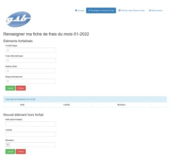
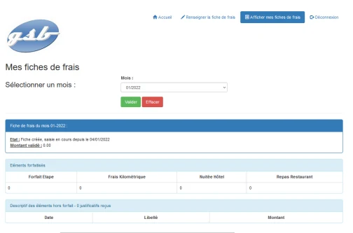
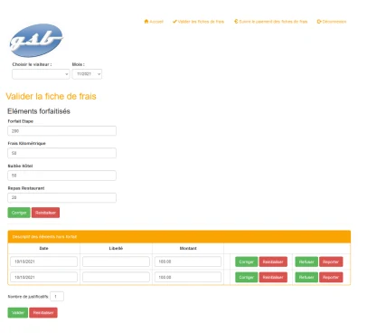
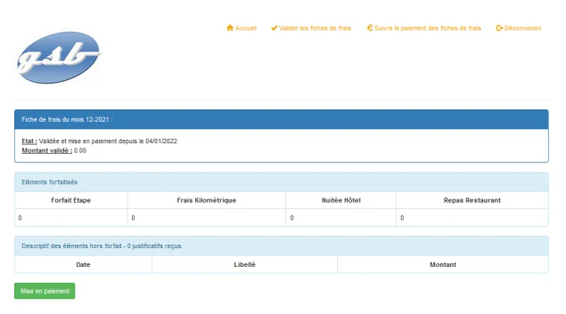

Projet BTS SIO · 2021
GSB Frais
Une application web permettant de saisir, consulter, valider et mettre en paiement des fiches de frais.
Parcours dans l’application









Contexte
Ce projet scolaire portait sur le cycle de traitement d’une fiche de frais. Les personnes qui saisissent les frais et celles qui vérifient les fiches disposent de parcours adaptés à leurs actions.
Conception et développement
-
Analyse
Identification des opérations à prendre en charge de la saisie à la mise en paiement.
-
Développement
Pages et formulaires HTML/CSS, logique métier en PHP et stockage des données dans MySQL.
-
Tests et présentation
Vérification des formulaires et des traitements, puis démonstration dans le cadre du BTS.